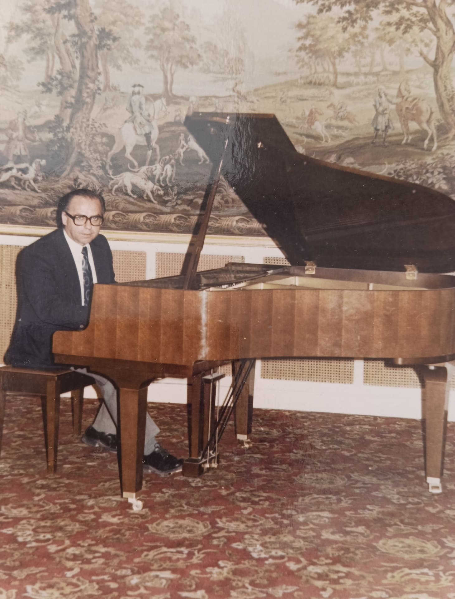

Δώστε στο πιάνο σας τη φροντίδα πού του αξίζει
Αναζητάτε έναν επαγγελματία χορδιστή και τεχνικό για το πιάνο σας; Η σωστή συντήρηση και το τακτικό χόρδισμα (μία με δύο φορές ετησίως) είναι το κλειδί για έναν άρτιο, κρυστάλλινο ήχο.
Σχετικά με μας
Η μουσική αποτελεί για χρόνια κεντρικό κόμβο στη ζωή μας. Εμπνευστής και δάσκαλός μας υπήρξε ο παππούς μας, Μελιξέ Κουπελιάν. Ο ένας εκ των δύο αδελφών ξεκίνησε να παίζει πιάνο στην ηλικία των 8 ετών. Φοίτησε στα μουσικά σχολεία της Παλλήνης και του Αλίμου. Παράλληλα, το τεχνικό υπόβαθρο στο χόρδισμα και την συντήρηση πιάνων χτίστηκε τόσο στο εργαστήριο του παππού μας, όσο και σ' εκείνο του μουσικού οίκου Νικοτιάν. Κορύφωση των γνώσεων και δεξιοτήτων αυτών αποτέλεσε η πιστοποίηση 600 ωρών στο χόρδισμα και την συντήρηση του πιάνου από το ΚΔΒΜ Εκπαιδευτική Ένωση.
Η παρακαταθήκη μας
Πρότερα χρόνια
Ο Μελιξέ Κουπελιάν, υπήρξε υψηλής κλάσεως πιανίστας και τεχνικός πιάνων στη Συρία και στο Λίβανο. Είχε ιδιαίτερη θέρμη για το πιάνο ως όργανο, γεγονός πού τον οδήγησε ν' ασχοληθεί με το χόρδισμα και τη συντήρησή του. Το πέτυχε κατόπιν καθοδήγησης και συνεργασίας με καταξιωμένους επαγγελματίες, αλλά και υπέρμετρου προσωπικού κόπου, αξιοποιώντας τη μουσικότητα και τις ακροαστικές δυνατότητες που είχε κατακτήσει πρωτύτερα.
Η ζωή στην Ελλάδα
Ερχόμενος στην Ελλάδα το 1981, διέπρεψε στον τομέα του χορδίσματος, της συντήρησης, της αποκατάσταστης και της αναπαλαίωσης κάθε τύπου πιάνου. Απόδειξη των προαναφερθέντων αποτελούν οι εγκάρδιες αναφορές παλιών πελατών και συναδέλφων του στ' όνομά του ακόμα και σήμερα. Επιπρόσθετα, όντας δεινός εκπαιδευτής, κατάφερε να μεταλαμπαδεύσει τις γνώσεις του στα παιδιά και στα εγγόνια του, ώστε να συνεχίσουν το έργο του.
Παρεχόμενες υπηρεσίες
- Χόρδισμα υψηλής ακρίβειας για κάθε τύπο πιάνου.
- Ρύθμιση και επισκευή για βελτίωση της αίσθησης και της απόκρισης των πλήκτρων.
- Κάλυψη αναγκών συντήρησης διαφόρων ειδών.
- Θωράκιση του οργάνου γι' αποτροπή φθορών.
- Εμπεριστατωμένη εκτίμηση πιάνου γι' αγοραπωλησίες.
Γιατί να μας προτιμήσετε;
- Πολυετής εξειδίκευση και πάθος στον χώρο του χορδίσματος.
- Ιδιαίτερο μουσικό αυτί ως μουσικοί.
Η μουσική αποτελεί γλώσσα που υπερβαίνει τους φραγμούς και φέρνει κοντά τους ανθρώπους από όλες τις πτυχές της ζωής, Άρθουρ Ρουμπινστάιν